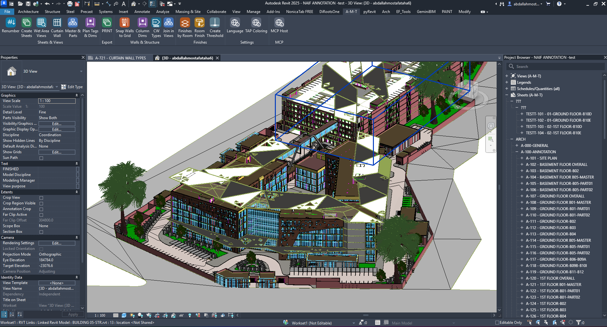

Model with fewer repetitive steps
Access dedicated modeling utilities for walls, curtain walls, parts and joins.
Purpose-built Revit workflows for architectural modeling, documentation, finishes and connected design processes.
Explore All 17 ToolsFrom setting up views and sheets to coordinating model elements and preparing deliverables, A-M-T brings focused commands together inside Revit.

Handle repetitive architectural operations with focused tools for curtain walls, wall positioning, parts, joins and threshold creation. The goal is to reduce manual repetition while keeping the workflow inside Revit.

Organize views and sheets, automate sheet creation, apply tags and dimensions, and streamline printing. These tools are designed to help teams repeat documentation tasks with fewer manual steps.

Use focused utilities for printing, wet area views, finish data and room finish workflows. A-M-T brings these production tasks into one consistent ribbon.

The optional MCP Host provides a local bridge for supported AI clients. You can choose how Revit asks for approval before model changes, including a read-only mode.
Each group focuses on a different part of architectural BIM production.
Access dedicated modeling utilities for walls, curtain walls, parts and joins.
Bring sheet creation, renumbering, tags, dimensions and printing together.
Use the optional local MCP bridge with configurable model-change permissions.
A-M-T is designed to support everyday architectural BIM tasks while keeping the work inside Autodesk Revit.
Explore all 17 tools and open the individual command guides.
Explore All Tools View Guides